Free & open source · Windows · macOS · Linux
Your iPhone backups, finally readable.
AppleFileViewer opens the backups that iTunes, Finder or Apple Devices save on your computer and shows your photos, messages, WhatsApp chats, calls, notes and more — offline, read-only and free.
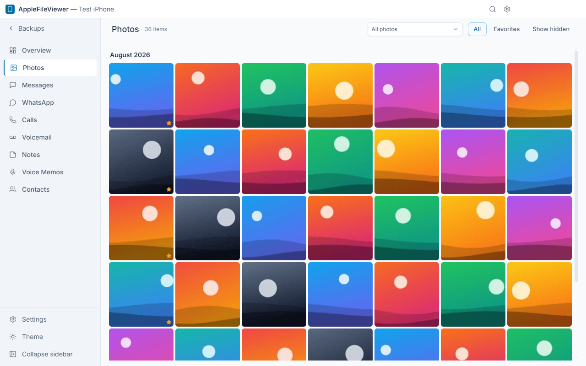
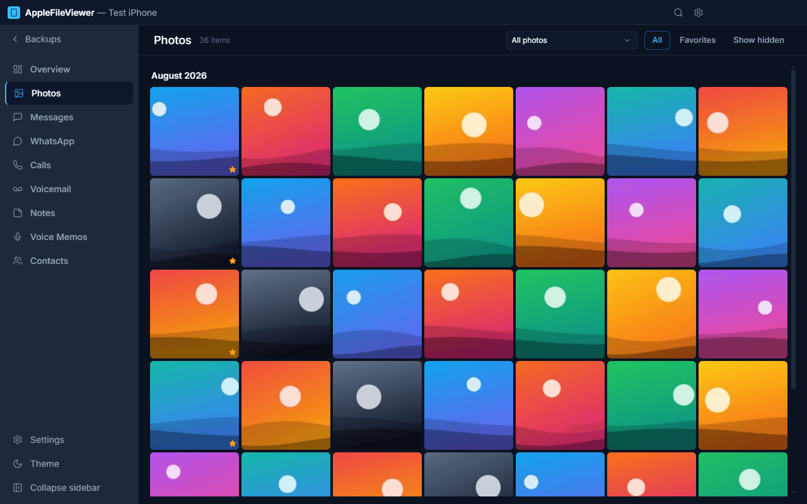
Everything in your backup, one click away
A native-feeling desktop app for the data iPhone keeps in its local backups.
-
Photos & videos
Camera roll with albums, favorites and smart albums. HEIC and videos play without extra codecs.
-
Messages
iMessage and SMS conversations with attachments, in a familiar chat layout.
-
WhatsApp
Private and group chats with sender names, photos, videos and voice notes.
-
Calls & voicemail
Full call history and voicemail recordings you can play and save.
-
Notes
Apple Notes with folders and rich text formatting preserved.
-
Voice Memos
Listen to and export your recordings.
-
Contacts
Your address book, used everywhere to show names instead of numbers.
-
Global search
Press Ctrl/⌘ + K to search messages, chats, notes and contacts at once.
-
Export
Save conversations and data as PDF, HTML, CSV, TXT, JSON or vCard; copy original media files.
-
Encrypted backups
Unlock password-protected backups right in the app.
-
Light, dark, EN/TR
Follows your system theme; English and Turkish interface.
-
Windows, macOS, Linux
One app, the same features on every desktop platform.
Screenshots
Captured from the real app using a synthetic demo backup.
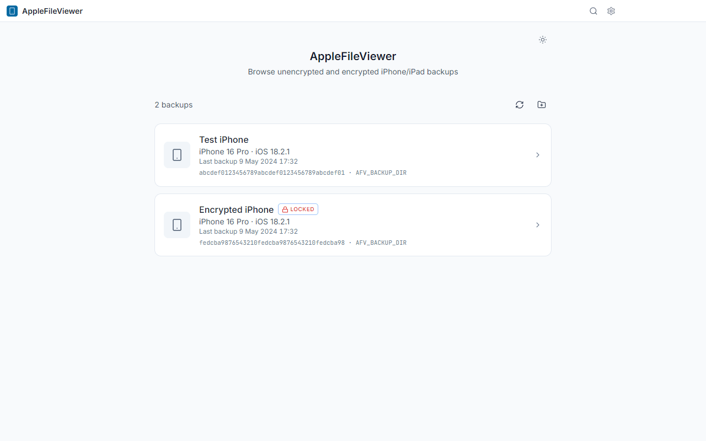
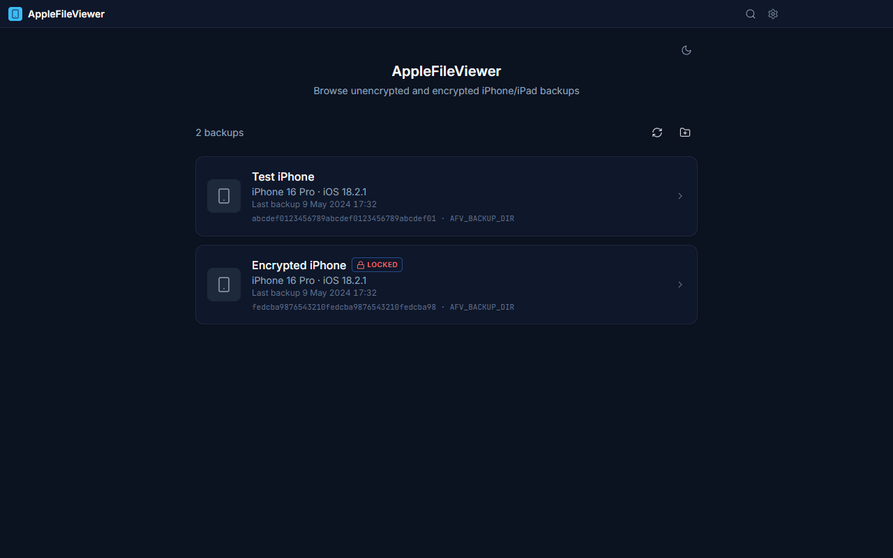
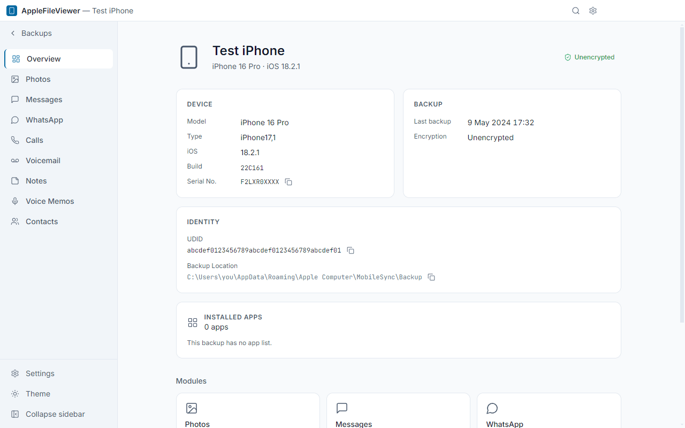
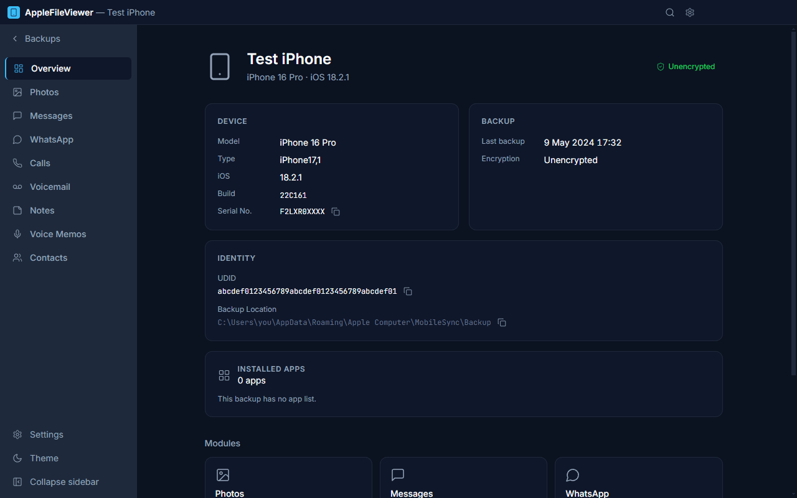
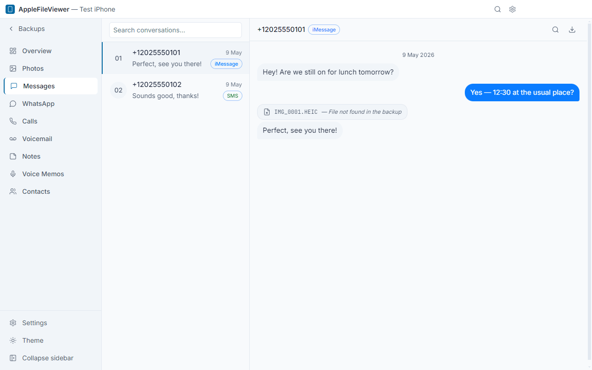
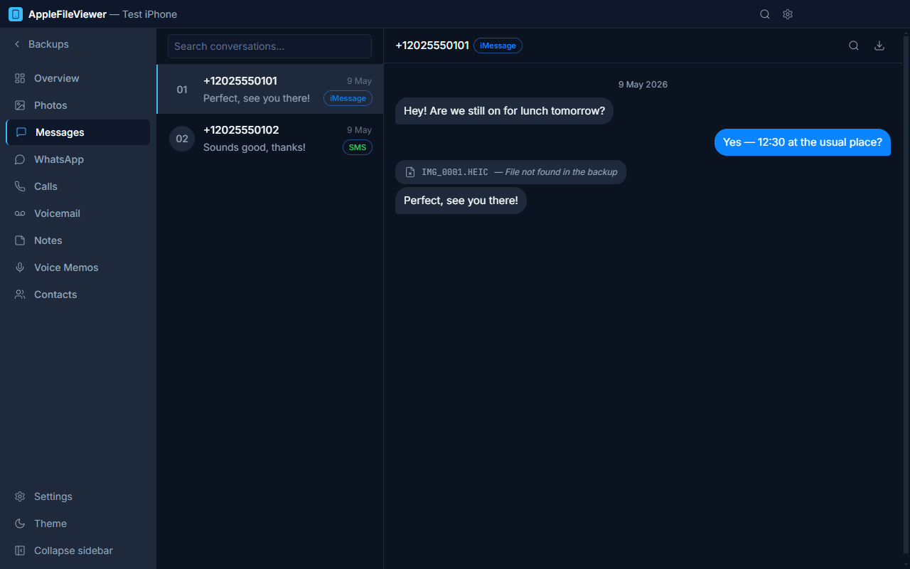
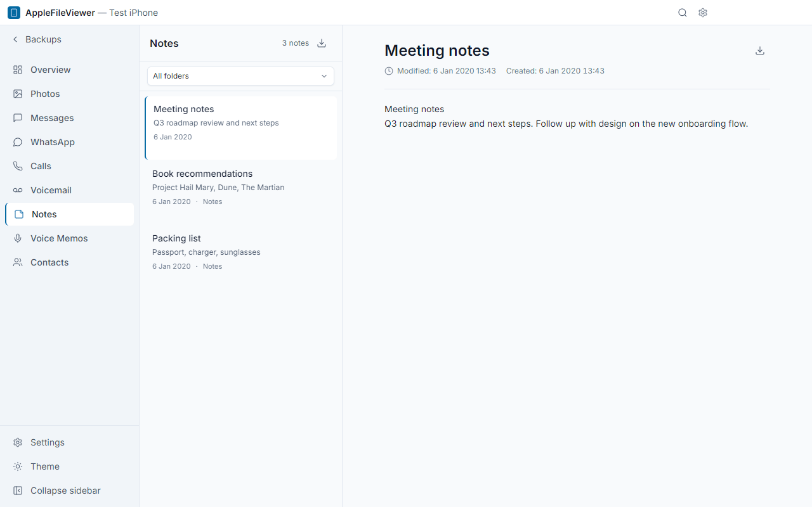
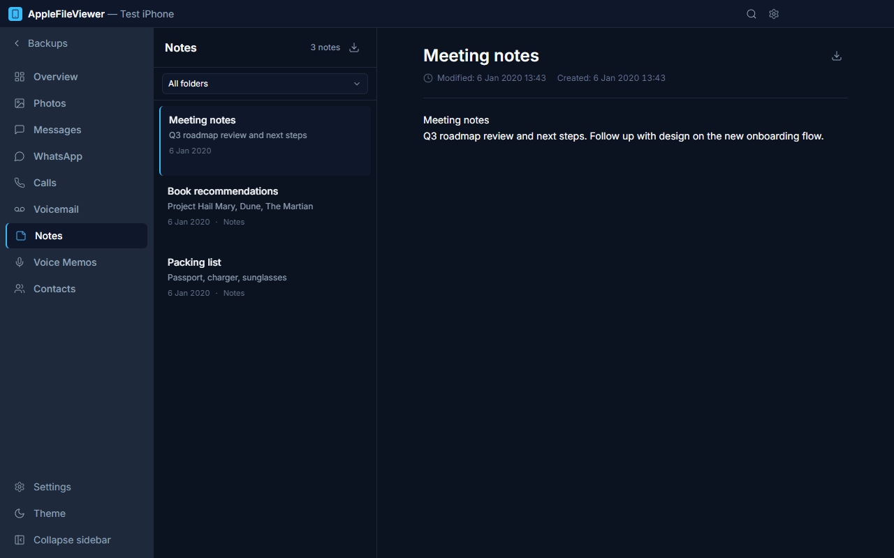
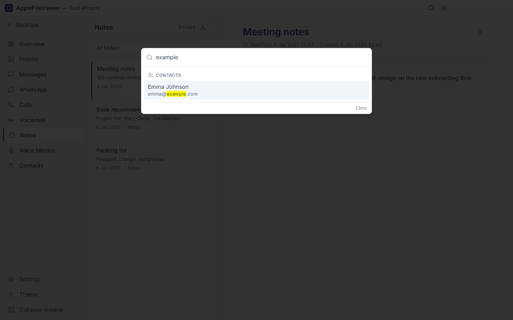
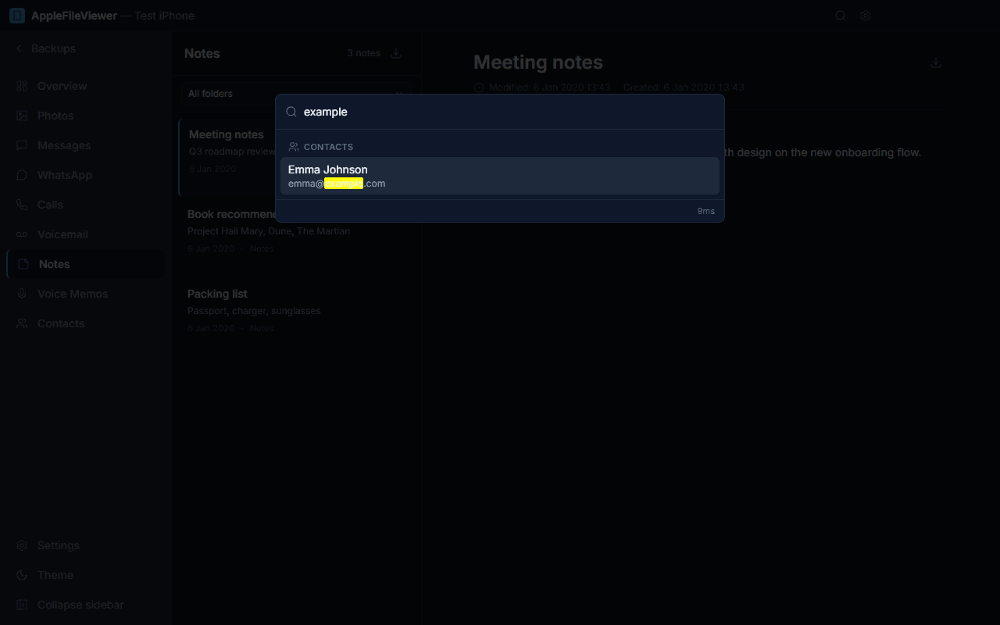
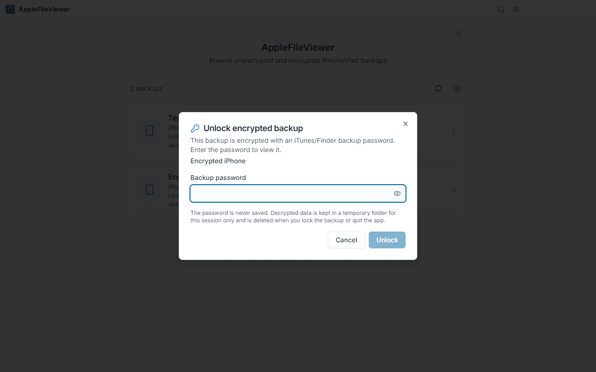
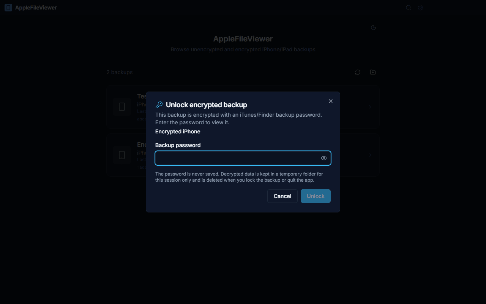
Private by design
Your backup contains your whole life. It never leaves your computer.
- Works fully offline — no account, no cloud, no uploads.
- No telemetry, analytics or tracking of any kind.
- Read-only: your backup files are never modified.
- Decrypted data lives in a temporary folder and is wiped when you lock the backup or quit.
- Open source under the MIT license — anyone can audit the code.
Encrypted backups supported
If “Encrypt local backup” is on for your iPhone, the backup is protected with a password. AppleFileViewer can unlock it:
- Select the backup marked LOCKED.
- Enter the backup password you chose in iTunes, Finder or Apple Devices.
- Browse as usual. Lock it again (or quit) and the decrypted copy is deleted.
The password is never stored. If you forgot it, nobody — including this app — can recover the backup.
Download
Free for everyone. Pick the file for your computer.
- Windows installerWindows 10/11 · x64 · .exe
- Windows portableNo installation · x64 · .exe
- macOS — Apple SiliconM1 / M2 / M3 / M4 · .dmg
- macOS — Intelx64 · .dmg
- Linux AppImageMost distributions · x86_64
- Linux .debDebian / Ubuntu · amd64
The app is not code-signed, so your system shows a warning the first time. See “First launch” below — it takes a few seconds. All releases & release notes
First launch of an unsigned app
Code-signing certificates cost money every year; this free app skips them. Here is how to open it safely.
-
Run
AppleFileViewer-Windows-Setup.exe(or the portable.exe). - If “Windows protected your PC” (SmartScreen) appears, click More info → Run anyway.
-
Backups are found automatically in
%APPDATA%\Apple Computer\MobileSync\Backup(iTunes) and%USERPROFILE%\Apple\MobileSync\Backup(Apple Devices / Microsoft Store iTunes).
-
Open the
.dmgand drag AppleFileViewer to Applications. - Open the app once. When macOS says it cannot verify the developer, go to System Settings → Privacy & Security, scroll down and click Open Anyway.
-
Alternative (Terminal):
xattr -dr com.apple.quarantine /Applications/AppleFileViewer.app -
Give it Full Disk Access (System Settings → Privacy &
Security → Full Disk Access → add AppleFileViewer), otherwise macOS hides
~/Library/Application Support/MobileSync/Backup.
-
AppImage:
chmod +x AppleFileViewer-Linux-x86_64.AppImageand run it. On Ubuntu 22.04+ you may needsudo apt install libfuse2. -
Debian/Ubuntu:
sudo apt install ./AppleFileViewer-Linux-amd64.deb -
Linux has no iTunes: copy a backup folder from a Windows PC or Mac, or create one
with libimobiledevice (
idevicebackup2 backup --full ~/iPhoneBackup), then choose the folder in the app.
Frequently asked questions
Is it really free?
Yes. It is open source under the MIT license: free to use, share and modify.
Does it need my iPhone connected?
No. It reads the backup that is already on your computer. Make a fresh backup with iTunes, Finder or Apple Devices first if you want the latest data.
Can it change or damage my backup?
No. Everything is opened read-only; the app works on temporary copies.
Where are my backups stored?
Windows: %APPDATA%\Apple Computer\MobileSync\Backup or
%USERPROFILE%\Apple\MobileSync\Backup. macOS:
~/Library/Application Support/MobileSync/Backup. You can also pick any
folder, e.g. on an external drive.
Why does my system warn me about the app?
The app is not signed with a paid certificate. The source code and build pipeline are public on GitHub; see “First launch” for how to open it.
Does it send any data anywhere?
No. There is no telemetry. The only optional network access is checking GitHub for a newer version.
Is this an Apple product?
No. It is an independent project, not affiliated with or endorsed by Apple Inc.